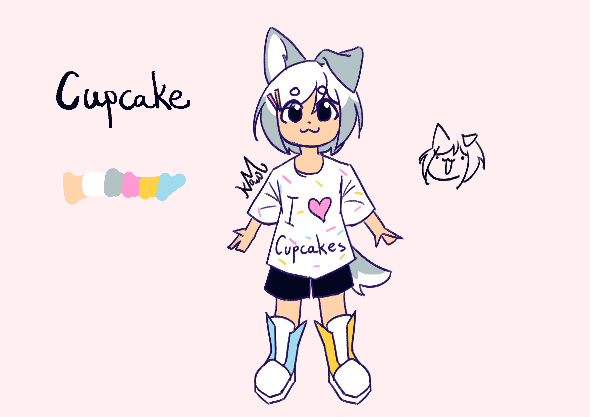

Bark

Lore facts:
- She does not like water
- She is a owner of many T-shirts
- Nobody knows where she came from
Meta facts:
- She is based off my baby dog in Minecraft PE, who drowned to death, because baby animals couldn't swim at the time
- I got so devastated that I decided to make her into a humanoid OC
- Wow a second character with a dark meta orgin story